Fait maison
Nos recettes sont préparées dans notre cuisine, sans raccourci.
Une boulangerie-pâtisserie de quartier,
faite avec soin, du matin au soir.
La Cerise est née d'une idée simple : offrir à notre quartier du bon pain, des gâteaux soignés et une table où l'on a plaisir à revenir.
Chaque matin, nos pains et nos viennoiseries sortent du four. Chaque midi, nos plats sont préparés sur place avec des produits frais.
Découvrir notre carte
Nos recettes sont préparées dans notre cuisine, sans raccourci.
Cuisson tous les matins et produits choisis avec soin.
Chez nous, chacun est reçu comme à la maison.

Venez nous
rendre visite